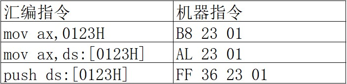
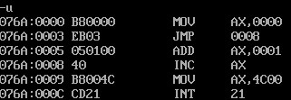
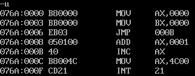
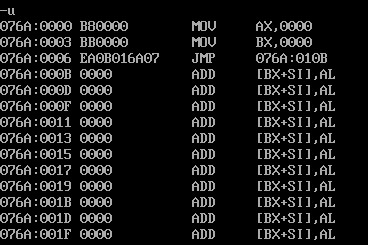
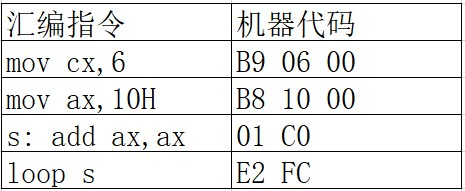

从0开始的汇编语言（九）
前言
从0开始的汇编语言系列，选用的参考书籍是清华大学出版社，王爽老师的《汇编语言第四版》。该系列属于博主的笔记系列，文中会采用一些书中的例子，图片以及思考题供读者阅读，如需详细学习汇编语言可以购入一本，谢谢。
学习之前我们做如下约定（随着学习深入还会出现新的约定）：
- 十六进制数均以H结尾
- 使用8086CPU作为案例
- 我们使用(地址或寄存器名称)表示一个寄存器或一个内存单元的内容，()内地址是且一定是物理地址
- 我们将idata视作常量
- 我们以reg表示一个寄存器包括ax、ah、sp、bp、si、di等，sreg表示一个段寄存器包括ds、ss、cs、es。
- nop占用一个字节，不进行任何动作
话不多说我们马上开始。
转移指令
还记得我们之前学习过的jmp指令嘛，就是那个可以用来修改CS，IP的指令。jmp指令就是转移指令的一种，概括的来讲，转移指令就是可以控制CPU执行内存中某处代码的指令。8086CPU的转移行为有以下两种：
- 只修改IP时，称为段内转移，比如：jmp AX。
- 同时修改CS和IP时，称为段间转移，比如：jmp 1000:0。
由于转移指令对IP的修改范围不同，段内转移又分为：短转移和近转移。
- 短转移IP的修改范围是-128~127。
- 近转移IP的修改范围是-32768~32767。
8086CPU的转移指令可以分为以下几类：
- 无条件转移指令（如jmp指令）
- 条件转移指令
- 循环指令（如loop指令）
- 过程
- 中断
这些转移指令的前提条件可能不同，但是其中的原理都大相径庭，我们会在这一章中学习无条件转移指令jmp来理解CPU执行转移指令的基本原理。
操作符offset
我们先引入一段简单的程序来介绍操作符offset：
1 | assume cs:codesg |
现在我们来解释一下上面的程序offset操作符取到了标号处的偏移地址，例如offset得到了start和s的偏移地址分别是0和3，所以指令mov ax,offset start就等同于mov ax,0。
jmp指令
jmp为无条件转移指令，可以修改IP也可以同时修改CS和IP。jmp指令要给出两种信息：
- 转移的目的地址
- 转移的距离（段间转移，段内短转移，段内近转移）
不同的给出目的地址的方法，不同的转移位置就对应着不同的jmp指令格式。
依据位移进行转移的jmp指令
jmp short 标号（转到标号处执行指令），这种格式的jmp指令实现的是段内短转移，之前说过这种转移的方式对IP的修改范围在-128~127，也就是说它最多可以向前跳转最多可以越过128个字节，向后跳转最多可以越过127个字节。short符号就说明了这个jmp指令进行的是一次短转移，标号就代表了这次跳转的目的地，待jmp指令执行完成之后，CS:IP应该指向标号处的指令。我们举一个简单的例子：
1 | assume cs:codesg |
上述程序运行后，ax中的值为1，这是因为执行jmp short s后，越过了add ax,1,IP指向了标号s处的指令inc ax。也就是说实际上程序只对ax进行了一次加1的工作。接下来我们看看jmp short s对应的机器指令，在此之前我们先看看别的汇编指令与其对应的机器指令：

可以看到一般的汇编指令其中的idata，无论它是一个数据还是内存单元的偏移地址，都会在它对应的机器指令中出现，因为CPU执行的是机器指令，它必须要处理这些数据或者地址。
现在我们回过头，使用debug将我们的程序翻译成机器指令看一下：

我们可以看到debug将jmp short s中的s表示为inc ax,1的偏移地址也就是0008H，并将jmp short s表示为jmp 0008，很合理的行为，但是我们看一下jmp short s对应的机器指令，我们发现它并不像是一般指令做的那样，它的机器码是EB 03,程序的0008H没有出现在机器指令中，这就意味着CPU在执行jmp short s的时候，它并不知道转移的目的地，那它是怎么知道到底要向哪里转移的呢？
我们修改一下程序：
1 | assume cs:codesg |
然后再一次的使用debug将程序翻译成机器指令：

OH！jmp指令对应的机器指令还是E8 03。这就说明了CPU在执行jmp指令的时候不需要转移的目的地址。这两次jmp指令转移的目的地址是不同的，如果机器指令中含有转移的目的地址，那么它们的机器指令也应该不同。可事实上它们的机器指令相同，这就说明jmp指令对应的机器指令中不包含转移的目的地址。
可是CPU不是上仙啊，你不告诉它转移的目的地址它也没办法工作呀，我们使用debug跟踪一下程序结合之前学习CPU执行程序的过程，仔细的看看CPU执行到jmp指令后到底发生了什么吧：
- (CS)=076AH，(IP)=0006H，CS:IP指向EB 03
- 读取指令码EB 03进入指令缓冲器
- (IP)=(IP)+2=0008H，CS:IP指向add ax,1
- CPU执行指令缓冲器的指令EB 03
- 指令EB 03执行后，(IP)=000BH，CS:IP指向inc ax
从上面的整个过程我们知道了，CPU将指令EB 03读入后，本来已经将CS:IP指向了add ax,1，下一条指令应该执行
add ax,1，但在jmp指令执行完后IP变成了000BH，所以EB 03这条机器指令一定修改了IP。没错这条指令确实修改了IP，但是根据什么呢？03！只有03可能了，EB太大了这个数字不可能是修改的关键，没错就是03指导CPU如何修改IP，它们没有告诉CPU目的地址是多少，但却说出了需要转移的位移，03也就是从当前位置向后移动3个字节。那03是如何得到的呢，其实是编译器根据汇编指令中的标号计算出来的，我们给出一个公式：位移=标号处偏移地址-jmp指令下一条指令的偏移地址。对于修改后的程序来讲0003H=000BH-0008H。
实际上，jmp short 标号的功能为：(IP)=(IP)+8位位移。因为8位位移的取值范围是-128~127所以要使用补码来表示。
还有一种和jmp short 标号功能相近的指令格式。jmp near ptr 标号，它的功能是(IP)=(IP)+16位位移，实现了段内近转移。16位位移的取值范围是-32768~32767，也是使用补码表示。
这些位移得来的计算方法相同都是：位移=标号处偏移地址-jmp指令下一条指令的偏移地址。在编译程序编译时算出。
转移的目的地址在指令中的jmp指令
我们刚才介绍了一个机器指令中不包含目的地址的jmp指令，那现在我们介绍一个机器指令中包含的目的地址jmp far ptr 标号 实现的是段间转移，又称远转移。功能如下：(CS)=标号所在段的段地址；(IP)=标号在段中的偏移地址。far ptr指明了指令用标号的段地址和偏移地址修改CS和IP。我们举一个简单的例子：
1 | assume cs:codesg |
我们使用debug将程序翻译成机器指令：

可以看到jmp far ptr s的机器指令，为EA 0B 01 6A 07这其中就包含了目的地址，高地址的076AH为转移的段地址，低地址的010B是偏移地址。
转移地址在寄存器中的jmp指令
我们还是先来看一下指令的格式：jmp 16位reg，它的功能是(IP)=(16位reg)，当然了这已经是我们的老朋友了，我们就不多介绍了。
转移地址在内存中的jmp指令
转移指令中的转移地址还可以在内存之中，转移地址在内存中的jmp指令有两种格式：
jmp word ptr 内存单元地址（段内转移）
功能：从内存单元地址处开始存放着一个字，是转移的目的地址的偏移地址，也就是(IP)=(内存单元地址)。内存单元地址可用寻址方式的任一格式给出。比如：
1 | mov ax,0123H |
这两种方式最终的结果相同，(IP)=0123H
jmp dword ptr 内存单元地址（段间转移）
功能：从内存单元地址处开始存放着两个字，高地址处的字是转移的目的段地址，低地址处是转移的目的偏移地址，也就是(CS)=(内存单元地址+2)，(IP)=(内存单元地址)。内存单元地址可用寻址方式的任一格式给出。比如：
1 | mov ax,0123H |
这两种方式最终的结果相同，(CS)=0000H，(IP)=0123H，CS:IP指向0000:0123。
jcxz指令
jcxz指令为有条件转移指令，所有的有条件转移指令都是短转移，在对应的机器码中包含转移的位移，而不是目的地址。对IP的修改范围为-128~127。我们来看一下它的格式：jcxz 标号，如果(CX)=0，转移到标号处执行。也就是当(CX)=0时，(IP)=(IP)+8位位移。位移计算方法也是老方法：位移=标号处偏移地址-jcxz指令下一条指令的偏移地址，结果用补码表示，在编译程序编译时算出。当(CX)不等于0时，程序什么也不会做，直接继续向下执行。所以从功能上来讲可以理解成if((CX)==0)jmp short 标号;。
loop指令
loop指令是循环指令，所有的循环指令都是短转移，在对应的机器码中包含转移的位移，而不是目的地址。对IP的修改范围为-128~127。我们来看一下它的格式：loop 标号（(CX)=(CX)-1，如果(CX)不等于0，转移到标号处执行）。位移计算方法也是老方法：位移=标号处偏移地址-jcxz指令下一条指令的偏移地址，结果用补码表示，在编译程序编译时算出，这些都是大同小异的。当(CX)=0时，程序什么也不会做，直接继续向下执行。所以从功能上我们可以理解为(CX)–；if((CX)!=0)jmp short 标号;。
根据位移进行转移的意义
相信有的小伙伴会疑问，为什么要算一下位移，然后通过位移再去确定最终的目的地址呢？其实这种设计，方便了程序段在内存中的浮动装配。我们看一段程序：

这段程序无论装在内存的哪里都可以正确执行，因为loop s在执行时只涉及s的位移（-4，前移四个字节，补码表示为FCH），而不是s的地址。如果loop s的机器码中包含的是s的地址，等s处的指令不在目的地址处，程序的执行就会出错。而loop s的机器码中包含的是转移的位移，就不存在这个问题了，因为无论s处的指令实际地址是多少，loop指令的转移地址是不变的。
编译器对转移位移超界的检测
注意，根据我们所学的转移指令发现，它们都有一个转移的范围，如果源程序中出现了超出转移范围的话，在编译阶段，编译器将报错。在我们之前使用的形如jmp 2000:0100的转移指令，这些都会引发编译报错，不过我们之前都是在debug中使用的，汇编编译器不认识而已。所以以后要小心源程序中不要出现这样的指令。
 wechat
wechat alipay
alipay